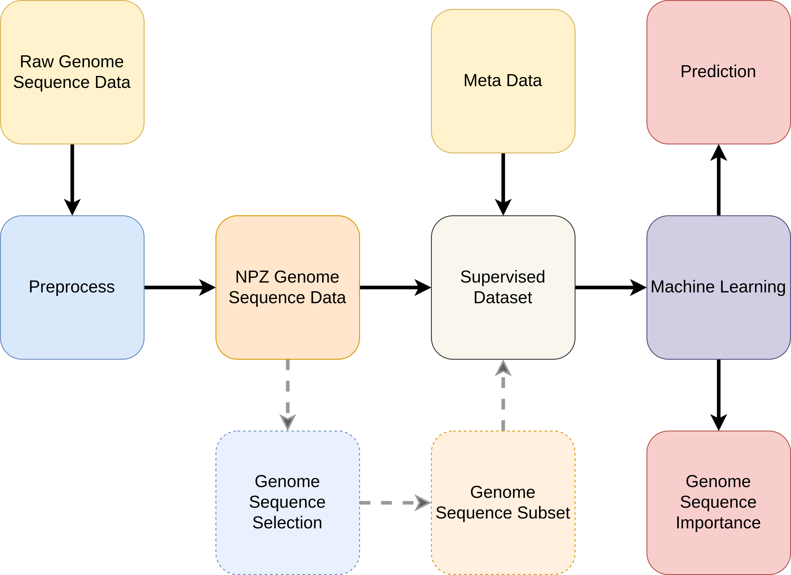

Overview¶
The genolearn package is a pipeline designed to enable researchers to use off-the-shelf machine learning toolkits on genome sequence data in Python3. Additionally, genolearn is a loose wrapper around the popular machine learning toolkit sklearn where the machine learning models are accessible via genolearn.models (see Models for more details.).

Our pipeline starts with the raw genome sequence data which assumes a certain data format (see Preprocessing for more details). Running the genolearn package directly on the raw genome sequence data generates a compressed converted data representation using numpy which results in .npz files.
With the compressed converted files, there is an optional script to run which performs genome sequence selection which reduces the number of genome sequences to consider when performing later machine learning tasks. By reducing the space of genome sequences to consider, the model complexity, along with computational and memory demands are reduced.
Next, we can use the DataLoader class to read in the meta data as well as the .npz files efficiently, optionally only filtering on genome sequences from the previous section, to then give to a off-the-shelf Machine Learning framework. For example, we can train a classifier which maps from some genome sequences input to meta data classification such as using \(k\)-mer counts to predict strain location discussed in Paper A.
Data¶
To use GenoLearn once you have installed it, we require you to first preprocess your genome sequence files (such as an fsm-lite gun-zipped) into a more readable format. This requires executing the package on a .gz file specifying any options. The .gz file should be a text file with the following format:
sequence_1 | identifier_{1,1}:count_{1,1} identifier_{1,1}:count_{2,1} ...
sequence_2 | identifier_{2,1}:count_{2,1} identifier_{2,1}:count_{2,2} ...
...
where identifier_{i,j} is the j-th identifier that contains the i-th sequence count_{i,j} many times. If an identifier does not contain the i-th sequence, then both the identifier and the associated zero count are omitted from the i-th row as the data is in sparse format (only containing non-zero information).
Preprocessing¶
First you will need to preprocess your data into a format this package has been optimized for. Depending on the magnitude of your data and the specifications of your machine, this may take minutes or even hours.
The preprocessing writes to a directory specified by the user. By default, the directory will be
DATASET NAME
├── dense
| ├── *.npz
├── feature-selection
├── sparse
| ├── *.npz
├── features.txt
├── log.txt
└── meta.json
dense folder (optional) contains dense arrays
sparse folder (optional) contains sparse arrays
feature-selection folder is initially empty but can be populated using the later discussed feature_selection.py module
features.txt contains all the genome sequences seperated by a single empty space
log.txt contains the parameters used to generate the current folder, the timestamp of the execution, and the RAM usage
meta.json contains the number of samples \(n\), the number of genome sequences \(m\) and the maximum value observed max
The dense folder contains dense arrays and the sparse folder contains the same information but as sparse arrays. The feature-selection folder is initially empty and can be populated using the later discussed feature_selection module. The user has the option to produce either the dense, sparse, or both outputs. The later discussed DataLoader requires only one data format.
On our <NAME OF DATASET WE USE> dataset, this meant reducing data reading time from hours, in the case of the raw fsm-lite file, to minutes, in the case of our preprocessed directory.
See Preprocessing for more details.
Data Loader¶
A DataLoader class can be found in genolearn.dataloader. This expects a path to the previous step’s preprocessed directory. The DataLoader class supports returning a dense or sparse matrix for the observations. Later Machine Learning models supports both sparse and dense data which the earlier Preprocessing step can output.
See Data Loader for more details.
Feature Selection¶
As the number of genome sequences tends to be large, we need to perform feature selection to then constrain our later Machine Learning models’ complexity. This optional step is to remove features with high measures of similarity.
See Feature Selection for more details.
Models¶
Within genolearn.models, there are machine learning models from the popular library sklearn and a few useful functions to save / load models.
See Modes for more details.
Feature Importance¶
After fitting a model, the user may wish to identify which were the most importance features in their dataset. With genolearn.feature_importance, the user can simply call this function on a fitted model and analyse the feature importance based on the particlar model. For example, Logistic Regression will return a set of coefficients for each feature corresponding to the contribution to each class label.
See Feature Importance for more details.